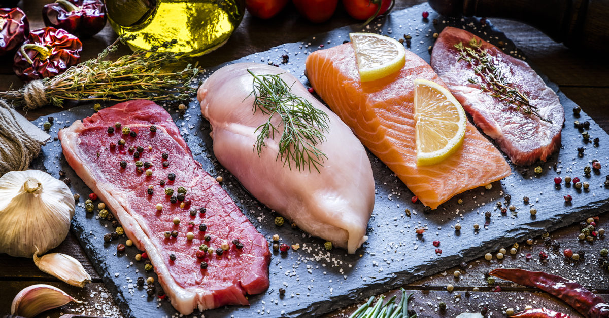

Some animals such as cows, pigs, chickens, and lamb are raised specifically for their meat. Others, such as game birds, wild boar, rabbits, and deer, are often hunted. For cooking, meat can be minced, cut into chops, diced, sliced, or roasted as large cuts.